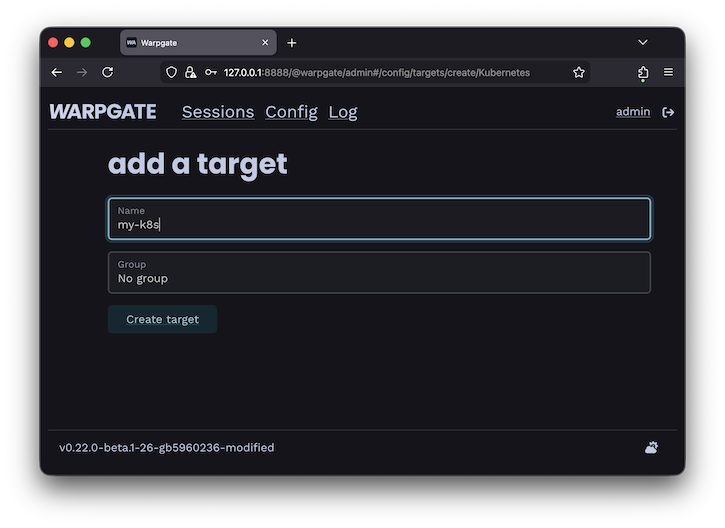
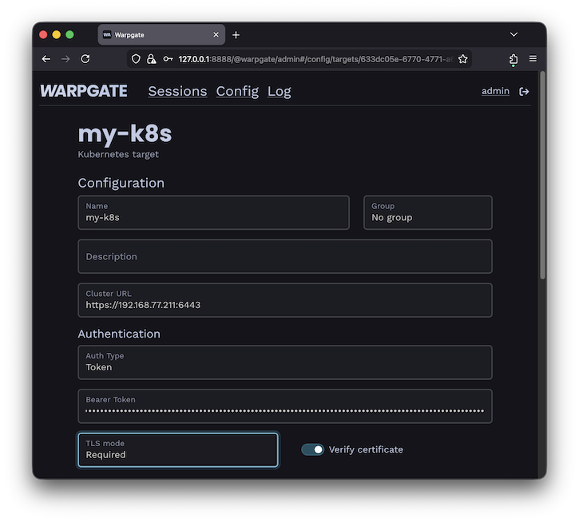
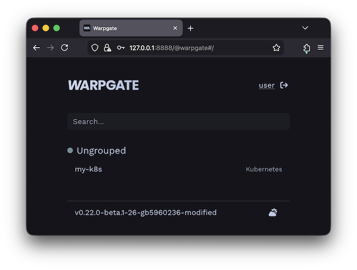
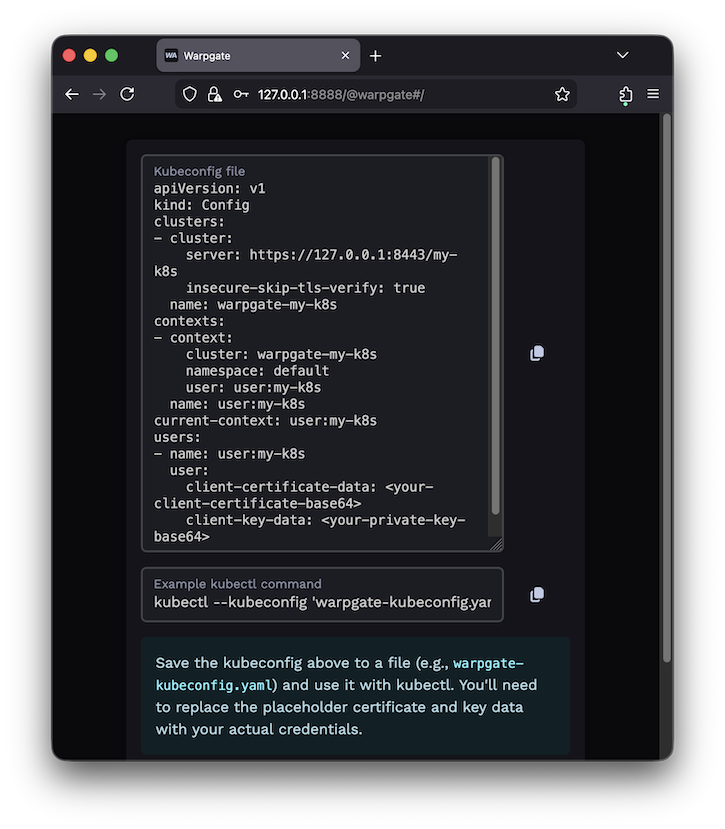
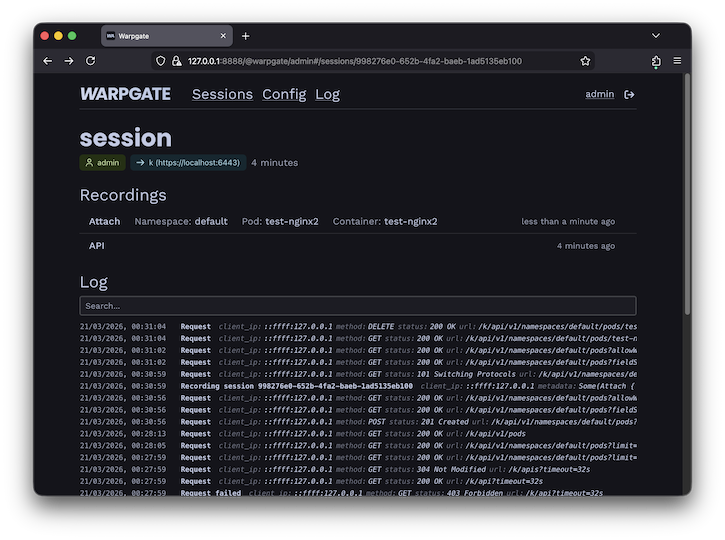

Adding a Kubernetes target§
Warpgate allows you to securely access Kubernetes clusters through a unified entry point, providing auditing and session recording for all API requests.
How it works§
When you add a Kubernetes target, Warpgate acts as an authenticating proxy for the Kubernetes API. Users connect to Warpgate using their own credentials (either an API token or a client certificate), and Warpgate then connects to the upstream Kubernetes cluster using the authentication details you've configured.
All requests are recorded and can be audited later.
Enabling Kubernetes listener§
Enable the Kubernetes protocol in your config file (default: /etc/warpgate.yaml) if you didn't do so during the initial setup:
+ kubernetes:
+ enable: true
+ listen: '[::]:8443'
+ certificate: /var/lib/warpgate/tls.certificate.pem
+ key: /var/lib/warpgate/tls.key.pem
You can reuse the same certificate and key that are used for the HTTP listener.
Connection setup§
Log into the Warpgate admin UI and navigate to Config > Targets > Add target and give the new Kubernetes target a name:

Adding a Kubernetes target
Fill out the configuration:

Kubernetes target configuration
The target should show up on the Warpgate's homepage:

Kubernetes target on the homepage
Users will be able to click the entry to obtain connection instructions:

Kubernetes target on the homepage
Client setup§
You can now use kubectl or any other Kubernetes client applications to connect through Warpgate with the settings shown. You can also use a Warpgate API token as a Bearer token when connecting to the Kubernetes API endpoint.
While your Kubernetes client is active, you'll be able to see the session status in the Admin UI, including the log, API queries and session recordings:

Kubernetes session view